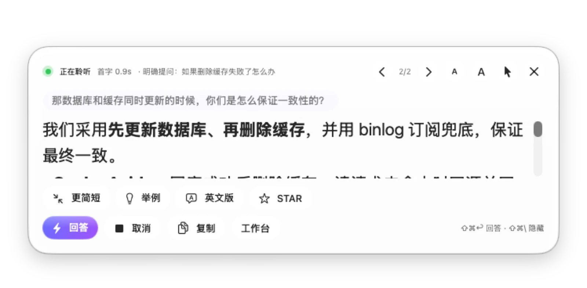
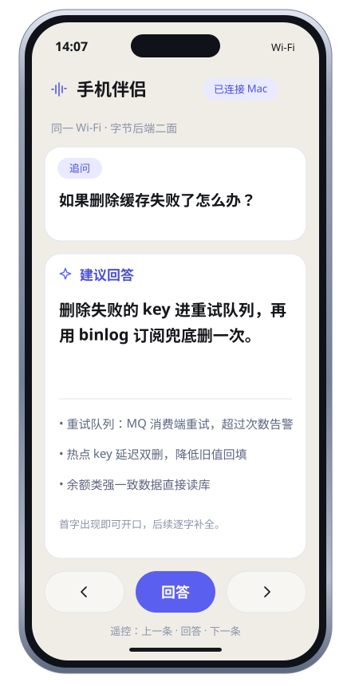
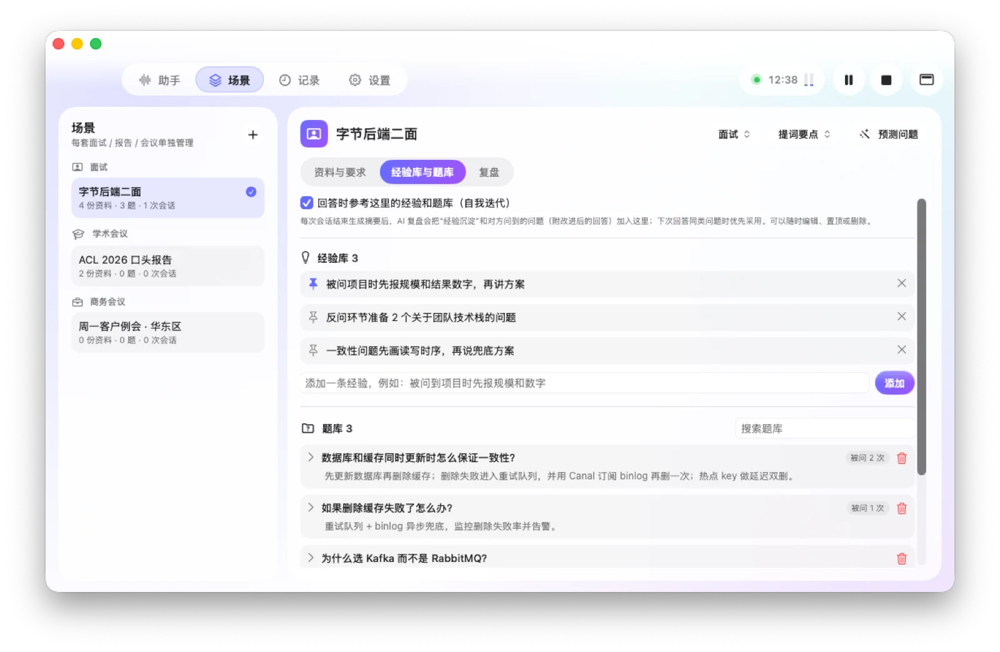
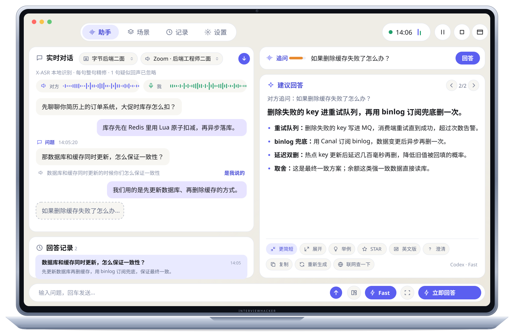
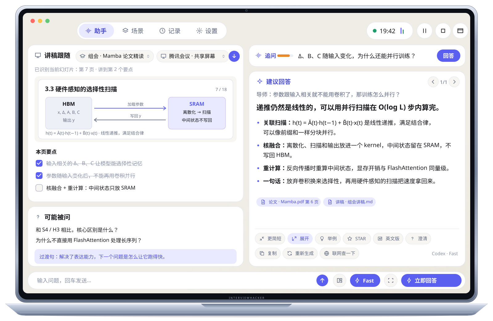
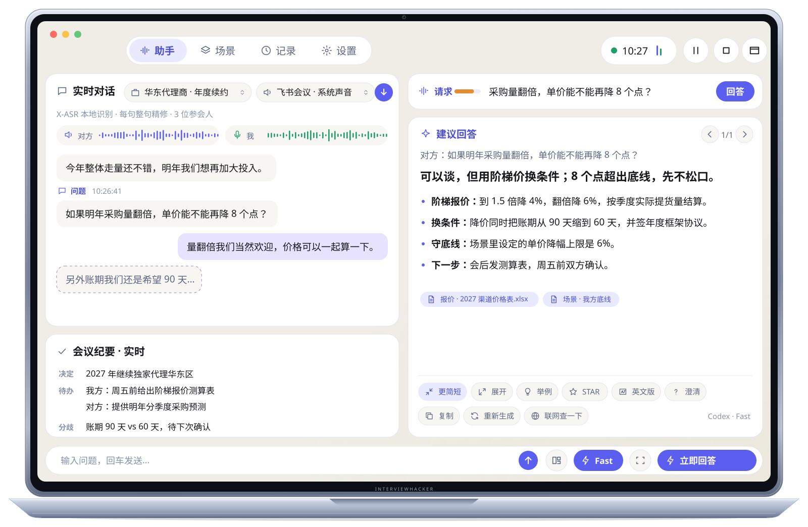
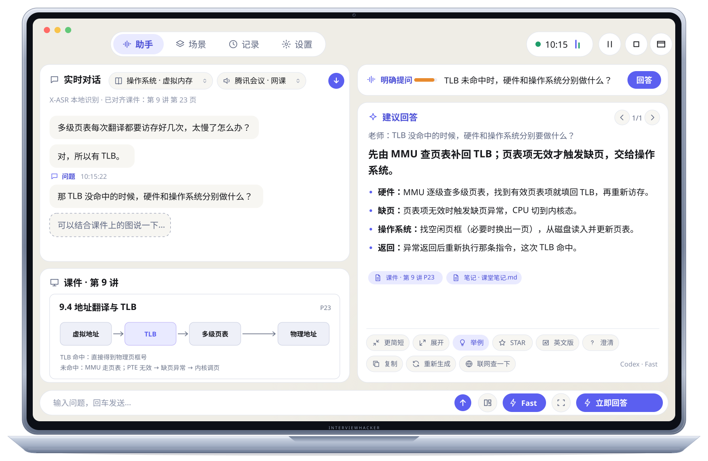

悬浮提词器
半透明窗口放在摄像头下方。鼠标可以穿透，按钮仍然可点；可调字号与透明度，⌘⇧\ 一键隐藏全部窗口。
InterviewHacker v1.9.0 · 原生 macOS · 默认本机离线语音识别
面试、学术报告、商务会议和课程里，它分别听清对方与你，判断哪一句是在问你，再结合你准备的资料，流式给出可以直接说出口的回答。
FIG 01实时演示
那数据库和缓存同时更新，怎么保证一致性？
建议回答流式输出
我们用的是先更新数据库、再删除缓存。删除失败的 key 进重试队列，同时用 Canal 订阅 binlog 再删一次兜底；热点 key 做延迟双删。
订单系统设计.md · §3简历.pdf · 第 2 页
音频仅在本机识别，不保存；回答所需文本发送给你配置的回答引擎。
会议窗口的声音是对方，麦克风是你。两路分开识别，说话重叠也不会混在一起；扬声器回声会被置灰，可一键恢复。
区分陈述、没说完、明确提问、请求和追问，过滤语气词与自问自答；你说完之前不会抢答。
问题一结束就开始输出第一人称的口语短句；对方补上后半句，回答会随之更新。
交互示意：本页演示为预设脚本，不访问麦克风、不调用模型、不联网。快捷键 ⌘⇧↩ 在演示中同样可用。
FIG 02工作链路
FIG 03屏幕感知 · v1.9
选择一个窗口、显示器或区域。系统 OCR 先给出快速上下文，变化的区域再由本机增强识别；每次回答都会冻结当时的画面与来源。
FIG 04资料与知识库
PDF（含扫描件）、Word、PPT、Excel、CSV、HTML 和图片都在本机转换成结构化 Markdown，按类别自动归档；检索结果注明类别、文件和页码。
导入队列v1.9
逐个文件显示解析、OCR、索引进度，可取消与重试；单个文件最大 512 MiB，PDF 最多 2000 页。
可选组件不装也能用
额外下载0 MB
默认使用系统 OCR 和关键词检索。文档运行环境单独下载约 186 MB，安装后 632 MB。
FIG 05随处查看
同一个回答，三种看法：完整的工作台、摄像头下方的提词器，或放在桌边的手机。

半透明窗口放在摄像头下方。鼠标可以穿透，按钮仍然可点；可调字号与透明度，⌘⇧\ 一键隐藏全部窗口。

扫码配对，局域网直连或自建端到端加密中转，可查看并遥控。默认关闭；目前提供 Android 调试版，iOS 安装版尚未提供。

完整转写、回答记录、来源与改写都在一个窗口里，适合会前准备与会中细看。
不承诺在屏幕共享中完全隐藏窗口；应用内提供共享可见性测试，开会前可以先确认。
FIG 06使用场景
面试、学术报告、商务会议、课程和通用五种模式。每个场景各有字段、资料分类、回答要求、经验库和题库，回答只用当前场景的内容。
带入简历、岗位 JD 和面经。面试官从订单系统追问到缓存一致性，回答直接引用你项目里的方案与数字。

讲稿跟随当前幻灯片，讲过的要点自动打勾并提示过渡句。导师追问时，解释会注明论文页码。

对方要求单价再降 8 个点时，按场景里设定的底线给出阶梯报价思路，同时实时记下决定事项、待办与分歧。

网课上老师点名提问“TLB 未命中时发生什么”，答案对齐到课件第 9 讲第 23 页；课后回看重点和还没弄懂的地方。

FIG 07记录与复盘
每次会话自动保存转写、问题、提词和当时用到的资料，生成摘要、完整问题清单、待办与复盘。有效的经验进入当前场景的经验库和题库，相近的问题合并去重。
记录可搜索，可导出 Markdown；会议结束和重要变更前自动备份，也可以关闭记录或随时删除。
FIG 08数据去向
默认本机离线识别，原始音频不保存。生成回答时，转录、问题、相关资料片段、截图与启用的技能会发送到你配置的回答引擎；场景资料与会话记录保存在你的 Mac 上，API Key 存放在钥匙串。
查看完整数据去向保存在你的 Mac场景资料 · 会话记录 · 经验库与题库 · 本机语音识别
回答引擎生成回答时：文本、资料片段、截图、技能
始终云端识别可选，需同意：音频
联网搜索开启后：问题文本
手机伴侣默认关闭：当前问题与回答
不做“隐身”承诺：录音与使用前请取得对方同意，并遵守所在场合的规则。
FIG 09常见问题
一台 Apple Silicon、macOS 14 及以上的 Mac，以及语音识别 + 对话服务。语音识别默认用本机模型，首次使用下载约 270 MB；回答需要你自己的 Codex（ChatGPT 账户）或任意 OpenAI 兼容 API，按对应服务的规则计费。
可以。默认使用本机 X-ASR 流式识别，再由离线模型整句精修。也可以改用 Apple Speech（需 macOS 26）或云端识别，云端识别需按提示同意后才发送音频。
不会。回答只使用当前问题检索到的资料片段，不会把所有资料塞入上下文；检索不到相关内容时，回答也不会被无关片段限制。
当前版本没有 Apple Developer ID 公证。首次打开时在“系统设置 › 隐私与安全性”中选择“仍要打开”即可；更新会校验 SHA-256 与签名。
暂不支持。InterviewHacker 是面向 Apple Silicon 的原生 macOS 应用。